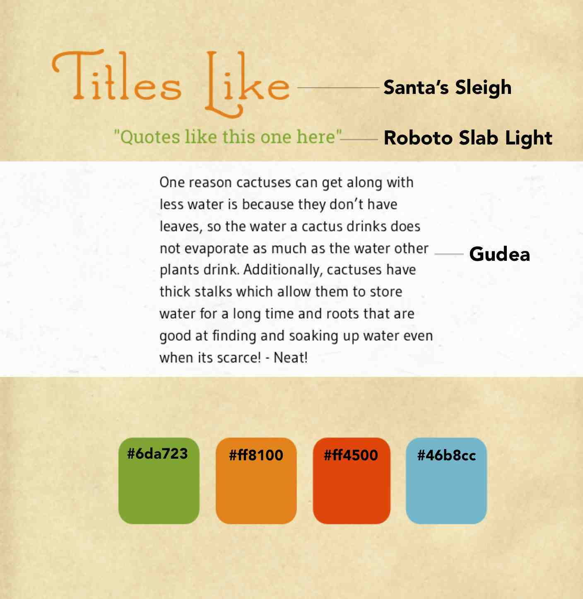

Bloom iPad Magazine
An interactive gardening magazine for kids and their parents with a good dose of botany. Let's learn about plants!
Details
My Role
UI/Interaction Designer
Skills
Competitive Analysis
Moodboard
Personas
Sketching
Writing
Tools
Adobe InDesign
Adobe Illustrator
Duration
Oct 2013 - Dec 2013
Overview
I've noticed kids and parents don't spend enough quality time outdoors and seem to occasionally spend time together on an iPad. I investigated this further with a competitive analysis and discovered that there are no magazines that focus on gardening and plants for kids. So, to help reconnect families with nature, I designed a concept iPad magazine for young children and their parents to introduce and expose them to gardening and plant life. I wanted to engage both adults and children in a way that taught everyone something new, and inspires an interest in plants and to go outdoors together.
Outcome
The concept issue of the magazine was all about cacti and succulents - a low-care plantgroup I thought would be a great intro for kids to plant life. I aimed to use the unique swipe and tap features of iPad technology to make the whole experience more interactive than traditional magazines.
Process Work
I wanted a fun and child-friendly feel, so I made a moodboard from my research clippings.

I crafted a design language from the fun and childish elements in my moodboard.
I designed personas to guide and focus my designs.

I drew out over several iterations the magazine's flow and layout.

You can see the sources for the magazine here.